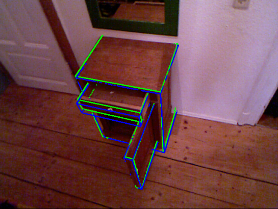
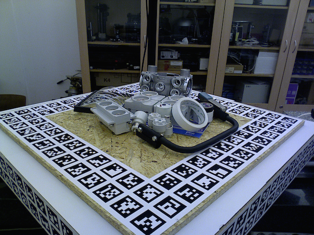

Challenge #1Imperial College London
|
Challenge #2TU Dresden  |
Challenge #3TU Graz & EPFL
|
Challenge #4Czech Tech. University  T-LESS Textureless Object Challenge |
Challenge #5University of Birmingham
|


Aims and Scope |
Organizers |
Invited Speakers |
||
The development of RGB-D sensors, high GPU computing, and scalable machine learning algorithms have opened the door to a whole new range of technologies and applications which require detecting and estimating object poses in 3D environments for a variety of scenarios. Our program will feature several high-quality invited talks, poster presentations, and a panel discussion to identify key research questions and highlight future research directions. We invite submissions of extended abstracts of ongoing or already published work. Accepted abstracts will be presented as posters / spotlights at the workshop, in areas including, but not limited to: We also invite authors to submit results to our challenges. Such results will be presented at the workshop and likely cited in later work. |
Tae-Kyun Kim, Imperial College London Vincent Lepetit, TU Graz Carsten Rother, TU Dresden Jiri Matas, Czech Technical University Ales Leonardis, University of Birmingham Rigas Kouskouridas, Imperial College London
Challenge Chairs
Andreas Doumanoglou, Imperial College London Alexander Krull, TU Dresden Frank Michel, TU Dresden
Prize Awards for
Best Poster Best Performance in Challenges |
Silvio Savarese, Stanford University Justus Piater, University of Innsbruck Shahram Izadi, Microsoft Research Redmond Richard Newcombe, University of Washington, Oculus Research Jiri Matas, Czech Technical University Carsten Rother, TU Dresden Vincent Lepetit, TU Graz Ales Leonardis, University of Birmingham Tae-Kyun Kim, Imperial College London
Sponsors
Other Datasets
|